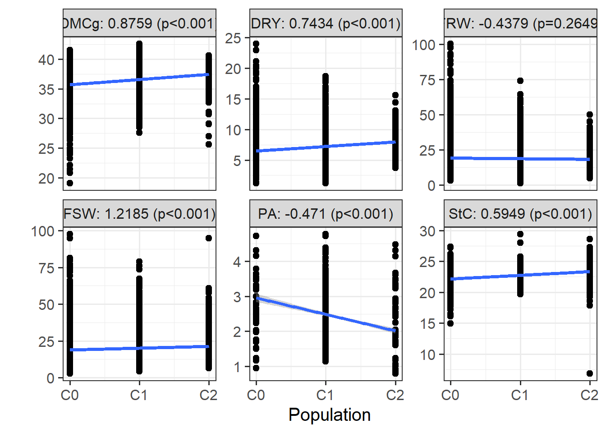
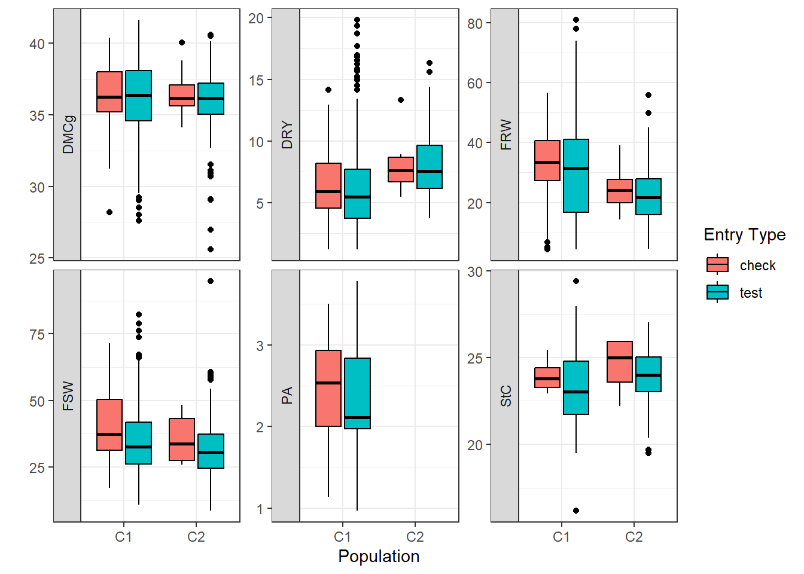
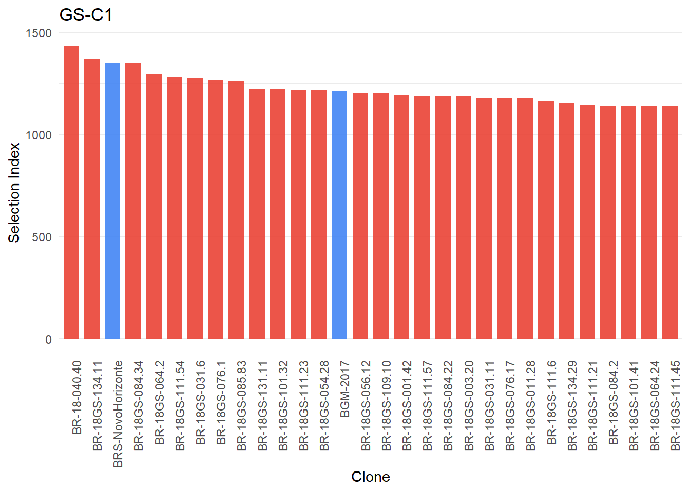
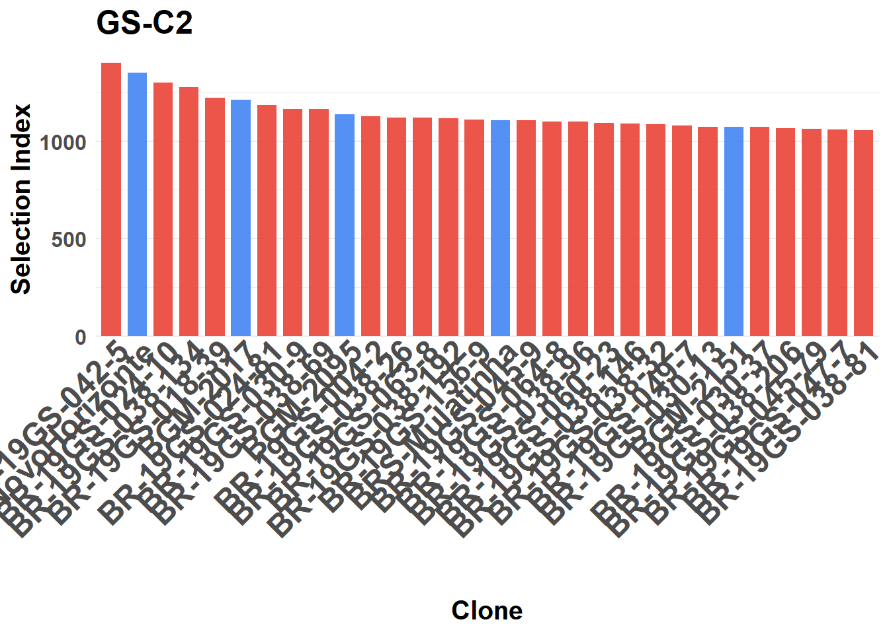

Last updated: 2025-10-04
Checks: 6 1
Knit directory: analisys-next-gen-2022/
This reproducible R Markdown analysis was created with workflowr (version 1.7.2). The Checks tab describes the reproducibility checks that were applied when the results were created. The Past versions tab lists the development history.
The R Markdown file has unstaged changes. To know which version of
the R Markdown file created these results, you’ll want to first commit
it to the Git repo. If you’re still working on the analysis, you can
ignore this warning. When you’re finished, you can run
wflow_publish to commit the R Markdown file and build the
HTML.
Great job! The global environment was empty. Objects defined in the global environment can affect the analysis in your R Markdown file in unknown ways. For reproduciblity it’s best to always run the code in an empty environment.
The command set.seed(20251003) was run prior to running
the code in the R Markdown file. Setting a seed ensures that any results
that rely on randomness, e.g. subsampling or permutations, are
reproducible.
Great job! Recording the operating system, R version, and package versions is critical for reproducibility.
Nice! There were no cached chunks for this analysis, so you can be confident that you successfully produced the results during this run.
Great job! Using relative paths to the files within your workflowr project makes it easier to run your code on other machines.
Great! You are using Git for version control. Tracking code development and connecting the code version to the results is critical for reproducibility.
The results in this page were generated with repository version 3031872. See the Past versions tab to see a history of the changes made to the R Markdown and HTML files.
Note that you need to be careful to ensure that all relevant files for
the analysis have been committed to Git prior to generating the results
(you can use wflow_publish or
wflow_git_commit). workflowr only checks the R Markdown
file, but you know if there are other scripts or data files that it
depends on. Below is the status of the Git repository when the results
were generated:
Ignored files:
Ignored: .Rproj.user/
Ignored: analysis/figure/
Ignored: data/Arquivos Fieldbook 2022/BR.AYTInd.22.CMa_1.xls
Ignored: data/Arquivos Fieldbook 2022/BR.AYTInd.22.Candeal 8MP e 16cm_1.xls
Ignored: data/Arquivos Fieldbook 2022/BR.AYTInd.22.Estab_1.xls
Ignored: data/Arquivos Fieldbook 2022/BR.AYTInd.22.NH 16CM_1.xls
Ignored: data/Arquivos Fieldbook 2022/BR.AYTM.22.Candeal_1.xls
Ignored: data/Arquivos Fieldbook 2022/BR.AYTM.22.Estab_1.xls
Ignored: data/Arquivos Fieldbook 2022/BR.AYTM.22.NH1_1.xls
Ignored: data/Arquivos Fieldbook 2022/BR.AYTM.22.NH_1.xls
Ignored: data/Arquivos Fieldbook 2022/BR.AYTM.22.Pureza_1.xls
Ignored: data/Arquivos Fieldbook 2022/BR.AYTM.Candeal.22_1.xls
Ignored: data/Arquivos Fieldbook 2022/BR.CBGS-C4.22.CNPMF_1.xls
Ignored: data/Arquivos Fieldbook 2022/BR.CET.22.CNPMF.xls
Ignored: data/Arquivos Fieldbook 2022/BR.MULTGS-C3.22.Podium_1.xls
Ignored: data/Arquivos Fieldbook 2022/BR.MultGS.22.NH_1.xls
Ignored: data/Arquivos Fieldbook 2022/BR.PTBAG.22.Candeal Florescimento_1.xls
Ignored: data/Arquivos Fieldbook 2022/BR.PYT.22.Candeal_1.xls
Ignored: data/Arquivos Fieldbook 2022/BR.PYT.22.Jaguaripe_1.xls
Ignored: data/Arquivos Fieldbook 2022/BR.PYTO.22.Lon_1.xls
Ignored: data/Arquivos Fieldbook 2022/BR.UYT.22.Jagua_1.xls
Ignored: data/Arquivos Fieldbook 2022/BR.UYT.22.TRAC_1.xls
Ignored: data/Arquivos Fieldbook 2022/BR.UYT.WD.22.BJL_1.xls
Ignored: data/Arquivos Fieldbook 2022/BR.UYTGS.22.CMa_1.xls
Ignored: data/Arquivos Fieldbook 2022/BR.UYTGS.22.COMG_1.xls
Ignored: data/Arquivos Fieldbook 2022/BR.UYTGS.22.Candeal_1.xls
Ignored: data/Arquivos Fieldbook 2022/BR.UYTGS.22.CoC_1.xls
Ignored: data/Arquivos Fieldbook 2022/BR.UYTGS.22.CoH_1.xls
Ignored: data/Arquivos Fieldbook 2022/BR.UYTGS.22.ER_1.xls
Ignored: data/Arquivos Fieldbook 2022/BR.UYTGS.22.Esp_1.xls
Ignored: data/Arquivos Fieldbook 2022/BR.UYTGS.22.Estab_1.xls
Ignored: data/Arquivos Fieldbook 2022/BR.UYTGS.22.IFGua_1.xls
Ignored: data/Arquivos Fieldbook 2022/BR.UYTGS.22.ItiBA_1.xls
Ignored: data/Arquivos Fieldbook 2022/BR.UYTGS.22.LagDa_1.xls
Ignored: data/Arquivos Fieldbook 2022/BR.UYTGS.22.Mara_1.xls
Ignored: data/Arquivos Fieldbook 2022/BR.UYTGS.22.Mont_1.xls
Ignored: data/Arquivos Fieldbook 2022/BR.UYTGS.22.NH1_1.xls
Ignored: data/Arquivos Fieldbook 2022/BR.UYTGS.22.NH_1.xls
Ignored: data/Arquivos Fieldbook 2022/BR.UYTGS.22.PAMG_1.xls
Ignored: data/Arquivos Fieldbook 2022/BR.UYTGS.22.Quiss_1.xls
Ignored: data/Arquivos Fieldbook 2022/BR.UYTGS.22.SA_1.xls
Ignored: data/Arquivos Fieldbook 2022/BR.UYTGS.22.SDAP_1.xls
Ignored: data/Arquivos Fieldbook 2022/BR.UYTGS.22.TRAC_1.xls
Ignored: data/Arquivos Fieldbook 2022/BR.UYTGS.22.VC_1.xls
Ignored: data/Dados_podridao_2018_2021.xlsx
Ignored: data/TP-BR-18-EMBRAPA-Nextgen.csv
Ignored: data/exclud_c0.csv
Ignored: data/metadata (1).csv
Ignored: data/metadata1.csv
Ignored: data/phenotype (1).csv
Ignored: data/phenotype.csv
Ignored: data/phenotypes_cleaned.rds
Ignored: output/StudyTraits.tiff
Ignored: output/StudyYear.tiff
Unstaged changes:
Modified: analysis/1_Trials-and-traits-2023.Rmd
Modified: analysis/3_Blups_cycles.Rmd
Note that any generated files, e.g. HTML, png, CSS, etc., are not included in this status report because it is ok for generated content to have uncommitted changes.
These are the previous versions of the repository in which changes were
made to the R Markdown (analysis/3_Blups_cycles.Rmd) and
HTML (docs/3_Blups_cycles.html) files. If you’ve configured
a remote Git repository (see ?wflow_git_remote), click on
the hyperlinks in the table below to view the files as they were in that
past version.
| File | Version | Author | Date | Message |
|---|---|---|---|---|
| Rmd | b39764d | WevertonGomesCosta | 2025-10-04 | corrected size of the figures in blups_cycles |
| html | b39764d | WevertonGomesCosta | 2025-10-04 | corrected size of the figures in blups_cycles |
| Rmd | 0775fba | WevertonGomesCosta | 2025-10-04 | add blupscycle .rmd and html |
| html | 0775fba | WevertonGomesCosta | 2025-10-04 | add blupscycle .rmd and html |
| Rmd | 85ab19d | WevertonGomesCosta | 2025-10-04 | update blups_cycles |
| Rmd | 4edf925 | WevertonGomesCosta | 2025-10-04 | add scripts rmd |
This script estimates BLUPs (Best Linear Unbiased
Predictions) for key agronomic and quality traits in cassava
across different breeding cycles (C0, C1, C2).
The goals are:
- Fit mixed models by trial and across trials
- Estimate heritability (H²) and BLUPs for each clone
- Compare genetic progress across cycles (C0 → C1 → C2)
- Visualize results with regression plots and boxplots
- Compute a Selection Index (SI) integrating multiple
traits
library(data.table) # Efficient data handling
library(metan) # Mixed models and BLUPs
library(tidyverse) # Data wrangling and visualization
library(foreach) # Parallel loops
library(doParallel) # Parallel backend
library(ggthemes) # Plot themes
library(ggpubr) # Publication-ready plots
library(ggpmisc) # Regression annotations
library(tidytext) # Text manipulationComment:
These packages provide the statistical and visualization tools needed
for BLUP estimation and interpretation.
phenosPod <- readxl::read_excel("data/Dados_podridao_2018_2021.xlsx", na = "NA")
dbdata <- readRDS(here::here("data", "phenotypes_cleaned.rds")) %>%
left_join(phenosPod, by = "observationUnitName") %>%
filter(!is.na(studyYear))Interpretation:
We merge the cleaned phenotypic dataset with pod rot data
(Podridao). Trials without year information are
excluded.
efeitos <- c("germplasmName","yearInLoc","blockInTrial","studyYear",
"trialInLocYr","studyName","Podridao","Pop","entryType")
traits <- c("DMCg", "DRY", "PA", "StC", "FRW", "FSW")Interpretation:
- Effects: identifiers for genotype, environment,
design, and population.
- Traits: dry matter, yield, plant architecture,
starch, root and shoot weights.
We keep only relevant trials, remove those with high pod rot, and retain the dominant population per trial.
trialInLocYr_Pop_top <- dbdata %>%
group_by(trialInLocYr, Pop) %>%
tally() %>%
filter(!is.na(Pop)) %>%
top_n(1, n) %>%
filter(str_detect(trialInLocYr, "UYT|AYT|PYT")) %>%
filter(!(str_detect(trialInLocYr, "PYT") & Pop == "C1")) %>%
rename(Population = Pop)
podridao <- dbdata %>%
group_by(trialInLocYr) %>%
summarise_if(is.numeric, ~ mean(.x, na.rm = TRUE)) %>%
filter(Podridao >= 0.5)
dbdata <- dbdata %>%
select(all_of(efeitos), all_of(traits)) %>%
filter(studyYear >= 2019 & !(trialInLocYr %in% podridao$trialInLocYr)) %>%
full_join(trialInLocYr_Pop_top)Interpretation:
- Trials with >50% pod rot are excluded.
- Only multi-environment trials (UYT, AYT, PYT) are
kept.
- Ensures data quality and comparability across cycles.
checks <- c("BRS-NovoHorizonte","BGM-2017","BRS-Mulatinha","BGM-2095","BGM-2151")Interpretation:
These are standard check varieties used for
benchmarking genetic gain.
We define a helper function to extract heritability (H²), BLUPs, and predicted means from each model.
analise_metan <- function(model, trait, trial) {
H2 <- get_model_data(model, "genpar") %>%
filter(Parameters == "H2") %>%
pull(trait)
BLUPS <- get_model_data(model, "ranef")$GEN
Predicted_values <- predict(model) %>%
group_by(GEN) %>%
summarise(across(where(is.numeric), mean)) %>%
pull(trait)
tibble(trialInLocYr = trial, trait = trait, H2 = H2,
germplasmName = BLUPS[[1]], BLUPS = BLUPS[[2]],
Predicted = Predicted_values)
}We then run models in parallel for efficiency.
num_cores <- detectCores()
registerDoParallel(cores = num_cores)
BLUPS <- foreach(trait = traits, .combine = bind_rows, .packages = c("tidyverse", "metan")) %dopar% {
DRG <- list()
for (l in unique(dbdata$trialInLocYr)) {
data <- dbdata %>% filter(trialInLocYr == l) %>% droplevels()
if (!is.na(mean(data[[trait]], na.rm = TRUE))) {
model <- gamem(data, gen = germplasmName, rep = blockInTrial, resp = sym(trait))
DRG <- append(DRG, list(analise_metan(model, trait, l)))
}
}
bind_rows(DRG)
}
registerDoSEQ()Interpretation:
This step fits mixed models per trial and extracts
BLUPs and H² for each trait.
Classificamos os clones em suas respectivas populações (C0, C1, C2), com base no nome ou código de tecido.
C0 <- fread("data/TP-BR-18-EMBRAPA-Nextgen.csv",
sep = ";",
na.strings = "") %>%
filter(!tissue_id %in% read.table("data/exclud_c0.csv")[[1]])
BLUPS1 <- BLUPS %>%
mutate(Pop = as.factor(
case_when(
germplasmName %like% "BR-20GS-" |
germplasmName %like% "BR-19GS-" ~ "C2",
germplasmName %like% "BR-18GS-" ~ "C1",
germplasmName %in% C0$tissue_id ~ "C0"
)
)) %>%
mutate(entryType = ifelse(germplasmName %in% checks, "check", "test"))
#save(BLUPS1, file = "output/BLUPS_metan.RData")Interpretation: - Each clone is assigned to its breeding cycle. - This classification is crucial for comparing genetic gains across cycles.
Interpretação: Essa classificação permite comparar o desempenho genético entre ciclos de seleção.
C0: população base (fundadores)
C1: clones selecionados em 2018
C2: clones selecionados em 2019–2020
We test whether predicted means increase across populations (C0 → C1 → C2).
resultado <- NULL
for (i in traits) {
test <- BLUPS1 %>%
filter(trait == i & !is.na(Pop) & H2 >= 0.5) %>%
aov(formula = Predicted ~ as.numeric(Pop))
pvalue <- round(anova(test)[[1, 5]], 4)
resultado <- c(resultado, paste0(i,": ",round(coef(test)[[2]], 4),
" (p", ifelse(pvalue < 0.001,"<0.001",paste0("=",pvalue)),")"))
}
names(resultado) <- traitsWe then plot regression lines:
BLUPS1 %>%
filter(!is.na(Pop) & H2 >= 0.5) %>%
ggplot(aes(x = as.numeric(Pop), y = Predicted)) +
geom_point() +
stat_poly_line() +
facet_wrap(~ trait, ncol = 3, scales = "free_y", labeller = as_labeller(resultado)) +
theme_bw() +
scale_x_continuous(breaks = 1:3, labels = c("C0","C1","C2")) +
labs(x = "Population", y = "")
Interpretation:
Regression slopes indicate genetic gain per cycle.
Significant positive slopes confirm progress.
BLUPS1 %>%
full_join(trialInLocYr_Pop_top) %>%
filter(!is.na(Population) & H2 >= 0.5) %>%
mutate(entryType = ifelse(germplasmName %in% checks, "check", "test")) %>%
ggboxplot(x = "Population", y = "Predicted", fill = "entryType") +
facet_wrap(trait ~ ., scales = "free_y", strip.position = "left") +
theme_bw() +
labs(x = "Population", y = "", fill = "Entry Type")
Interpretation:
Boxplots show the distribution of predicted values per cycle,
contrasting checks vs tests. This highlights the
superiority of selected clones over checks.
Até aqui, rodamos modelos por ensaio. Agora, fazemos uma análise conjunta (multi‑environment trial analysis), que permite estimar BLUPs considerando todos os ambientes (locais/anos) simultaneamente. Isso aumenta a precisão e permite avaliar a estabilidade dos clones.
analise_metan_joint <- function(model, trait) {
H2 <- get_model_data(model, "genpar") %>%
filter(Parameters == "Heritability") %>%
pull(trait)
BLUPS <- get_model_data(model, "ranef")$GEN
Predicted_values <- predict(model) %>%
group_by(GEN) %>%
summarise(across(where(is.numeric), mean)) %>%
pull(trait)
tibble(
trait = trait,
H2 = H2,
germplasmName = BLUPS[[1]],
BLUPS = BLUPS[[2]],
Predicted = Predicted_values
)
}Comentário:
Essa função retorna, para cada característica:
- H² (heritabilidade) → precisão da seleção.
- BLUPs → valores ajustados por clone.
- Predicted → médias preditas considerando todos os
ambientes.
num_cores <- detectCores()
registerDoParallel(cores = num_cores)
BLUPS_join <- foreach(
trait = traits,
.combine = bind_rows,
.multicombine = TRUE,
.verbose = TRUE,
.packages = c("tidyverse", "metan")
) %dopar% {
DRG <- list()
data <- dbdata %>%
select(1:6, trait, 16) %>%
na.omit() %>%
droplevels()
if (!is.na(mean(data[[trait]], na.rm = TRUE))) {
model <- gamem_met(
data,
env = trialInLocYr,
gen = germplasmName,
rep = blockInTrial,
resp = sym(trait)
)
DRG <- append(DRG, list(analise_metan_joint(model, trait)))
}
bind_rows(DRG)
}discovered package(s):
automatically exporting the following variables from the local environment:
analise_metan_joint, dbdata
explicitly exporting package(s): tidyverse, metan
numValues: 6, numResults: 0, stopped: TRUE
got results for task 1
numValues: 6, numResults: 1, stopped: TRUE
returning status FALSE
got results for task 2
numValues: 6, numResults: 2, stopped: TRUE
returning status FALSE
got results for task 3
numValues: 6, numResults: 3, stopped: TRUE
returning status FALSE
got results for task 4
numValues: 6, numResults: 4, stopped: TRUE
returning status FALSE
got results for task 5
numValues: 6, numResults: 5, stopped: TRUE
returning status FALSE
got results for task 6
numValues: 6, numResults: 6, stopped: TRUE
first call to combine function
evaluating call object to combine results:
fun(result.1, result.2, result.3, result.4, result.5, result.6)
returning status TRUEregisterDoSEQ()Interpretação:
Aqui usamos o gamem_met para ajustar
modelos mistos multiambiente. Isso permite separar efeitos de genótipo,
ambiente e interação G×E, fornecendo BLUPs mais robustos.
C0 <- fread("data/TP-BR-18-EMBRAPA-Nextgen.csv",
sep = ";",
na.strings = "") %>%
filter(!tissue_id %in% read.table("data/exclud_c0.csv")[[1]])
BLUPS_join1 <- BLUPS_join %>%
mutate(Pop = as.factor(
case_when(
germplasmName %like% "BR-20GS-" |
germplasmName %like% "BR-19GS-" ~ "C2",
germplasmName %like% "BR-18GS-" |
germplasmName %like% "BR-18-040.40" ~ "C1",
germplasmName %in% C0$tissue_id ~ "C0"
)
))
#save(BLUPS_join1, file = "output/BLUPS_metan_join.RData")Interpretação:
Cada clone recebe sua classificação de ciclo (C0, C1,
C2). Isso é essencial para comparar ganhos genéticos entre
gerações.
O Índice de Seleção (SI) é uma métrica composta que
integra múltiplas características em uma única pontuação
ponderada.
Ele reflete os objetivos do programa de melhoramento, atribuindo maior
peso às características de maior relevância (ex.: rendimento e qualidade
de raiz).
BLUPS_join1 <- BLUPS_join1 %>%
select(-H2,-BLUPS) %>%
pivot_wider(names_from = trait, values_from = Predicted) %>%
mutate(
SI = 5 * coalesce(DMCg, 0) +
8 * (coalesce(PA, 0) + coalesce(FSW, 0)) +
10 * (coalesce(StC, 0) + coalesce(FRW, 0) + coalesce(DRY, 0)),
entryType = if_else(germplasmName %in% checks, "check", "test"),
germplasmName = reorder(germplasmName, desc(SI))
)Interpretação:
- Os pesos (5, 8, 10) refletem a prioridade do
programa:
- Rendimento (FRW, DRY, StC) → peso maior (10).
- Arquitetura e biomassa aérea (PA, FSW) → peso
intermediário (8).
- Qualidade (DMCg) → peso menor, mas ainda relevante
(5).
- O SI permite ranquear clones de forma integrada,
evitando decisões baseadas em apenas uma característica.
- Clones com SI mais alto são os principais candidatos à
seleção.
Aqui visualizamos os 30 melhores clones da população C1 (mais checks), ranqueados pelo SI.
BLUPS_join1 %>%
mutate(entryType = if_else(germplasmName %in% checks, "check", "test")) %>%
filter(Pop == "C1" | entryType == "check") %>%
droplevels() %>%
group_by(germplasmName) %>%
arrange(desc(SI)) %>%
ungroup() %>%
slice(1:30) %>%
ggplot(aes(x = germplasmName, y = SI, fill = entryType)) +
geom_col(width = 0.75, alpha = 0.9, show.legend = F) +
scale_fill_gdocs() +
theme_minimal() +
scale_x_reordered() +
theme(
axis.text.x = element_text(angle = 90, hjust = 1, vjust = 1),
legend.title = element_blank(),
legend.position = "bottom",
panel.grid.major.x = element_blank(),
panel.grid.minor.x = element_blank(),
panel.spacing.x = unit(0.2, "lines"),
strip.background = element_blank()) +
labs(x = "Clone",
y = "Selection Index",
fill = "Entry Type",
title = "GS-C1")
Interpretação:
- O gráfico mostra os 30 clones mais promissores da
C1.
- A presença dos checks permite comparar o desempenho
dos novos clones com variedades já conhecidas.
- Clones acima dos checks indicam avanço genético
real.
O mesmo procedimento é feito para a população C2.
BLUPS_join1 %>%
mutate(entryType = if_else(germplasmName %in% checks, "check", "test")) %>%
filter(Pop == "C2" | entryType == "check") %>%
droplevels() %>%
group_by(germplasmName) %>%
arrange(desc(SI)) %>%
ungroup() %>%
slice(1:30) %>%
ggplot(aes(x = germplasmName, y = SI, fill = entryType)) +
geom_col(width = 0.75, alpha = 0.9, show.legend = F) +
scale_fill_gdocs() +
theme_minimal() +
scale_x_reordered() +
theme(
axis.text.x = element_text(angle = 90, hjust = 1, vjust = 1),
legend.title = element_blank(),
legend.position = "bottom",
panel.grid.major.x = element_blank(),
panel.grid.minor.x = element_blank(),
panel.spacing.x = unit(0.2, "lines"),
strip.background = element_blank()) +
labs(x = "Clone",
y = "Selection Index",
fill = "Entry Type",
title = "GS-C2")
Interpretação:
- Os 30 melhores clones da C2 apresentam, em geral, SI
mais alto que os da C1.
- Isso confirma o ganho genético entre ciclos, com C2
superando C1 e os checks.
- O gráfico evidencia a eficiência da seleção genômica
no programa.
Neste script, realizamos:
- Estimativa de BLUPs por ensaio e
conjunta
- Cálculo de H² para avaliar confiabilidade
- Comparação entre ciclos (C0 → C1 → C2) via regressão e boxplots
- Construção de um Índice de Seleção (SI) para
priorizar clones superiores
- Visualização dos 30 melhores clones por ciclo em
gráficos de barras
Mensagem-chave:
Os resultados confirmam ganhos genéticos consistentes
ao longo dos ciclos, com clones mais recentes (C2) apresentando
desempenho superior em rendimento e qualidade.
O uso de BLUPs e índices de seleção fornece uma base sólida para
decisões estratégicas no programa de melhoramento,
acelerando o lançamento de variedades mais produtivas e adaptadas.
sessionInfo()R version 4.5.1 (2025-06-13 ucrt)
Platform: x86_64-w64-mingw32/x64
Running under: Windows 11 x64 (build 26100)
Matrix products: default
LAPACK version 3.12.1
locale:
[1] LC_COLLATE=Portuguese_Brazil.utf8 LC_CTYPE=Portuguese_Brazil.utf8
[3] LC_MONETARY=Portuguese_Brazil.utf8 LC_NUMERIC=C
[5] LC_TIME=Portuguese_Brazil.utf8
time zone: America/Sao_Paulo
tzcode source: internal
attached base packages:
[1] parallel stats graphics grDevices utils datasets methods
[8] base
other attached packages:
[1] tidytext_0.4.3 ggpmisc_0.6.2 ggpp_0.5.9 ggpubr_0.6.1
[5] ggthemes_5.1.0 doParallel_1.0.17 iterators_1.0.14 foreach_1.5.2
[9] lubridate_1.9.4 forcats_1.0.0 stringr_1.5.2 dplyr_1.1.4
[13] purrr_1.1.0 readr_2.1.5 tidyr_1.3.1 tibble_3.3.0
[17] ggplot2_4.0.0 tidyverse_2.0.0 metan_1.19.0 data.table_1.17.8
loaded via a namespace (and not attached):
[1] Rdpack_2.6.4 polynom_1.4-1 readxl_1.4.5
[4] rlang_1.1.6 magrittr_2.0.4 git2r_0.36.2
[7] compiler_4.5.1 vctrs_0.6.5 quantreg_6.1
[10] pkgconfig_2.0.3 fastmap_1.2.0 backports_1.5.0
[13] labeling_0.4.3 promises_1.3.3 rmarkdown_2.29
[16] tzdb_0.5.0 nloptr_2.2.1 MatrixModels_0.5-4
[19] xfun_0.53 cachem_1.1.0 jsonlite_2.0.0
[22] SnowballC_0.7.1 later_1.4.4 tweenr_2.0.3
[25] broom_1.0.10 R6_2.6.1 bslib_0.9.0
[28] stringi_1.8.7 RColorBrewer_1.1-3 GGally_2.4.0
[31] car_3.1-3 boot_1.3-31 cellranger_1.1.0
[34] jquerylib_0.1.4 numDeriv_2016.8-1.1 Rcpp_1.1.0
[37] knitr_1.50 httpuv_1.6.16 Matrix_1.7-3
[40] splines_4.5.1 timechange_0.3.0 tidyselect_1.2.1
[43] rstudioapi_0.17.1 abind_1.4-8 yaml_2.3.10
[46] codetools_0.2-20 lattice_0.22-7 lmerTest_3.1-3
[49] withr_3.0.2 S7_0.2.0 evaluate_1.0.5
[52] survival_3.8-3 ggstats_0.11.0 polyclip_1.10-7
[55] pillar_1.11.1 carData_3.0-5 janeaustenr_1.0.0
[58] whisker_0.4.1 reformulas_0.4.1 generics_0.1.4
[61] rprojroot_2.1.1 mathjaxr_1.8-0 hms_1.1.3
[64] scales_1.4.0 minqa_1.2.8 glue_1.8.0
[67] tools_4.5.1 tokenizers_0.3.0 lme4_1.1-37
[70] SparseM_1.84-2 ggsignif_0.6.4 fs_1.6.6
[73] grid_4.5.1 rbibutils_2.3 nlme_3.1-168
[76] patchwork_1.3.2 ggforce_0.5.0 Formula_1.2-5
[79] cli_3.6.5 workflowr_1.7.2 gtable_0.3.6
[82] rstatix_0.7.2 sass_0.4.10 digest_0.6.37
[85] ggrepel_0.9.6 farver_2.1.2 htmltools_0.5.8.1
[88] lifecycle_1.0.4 here_1.0.2 MASS_7.3-65 Weverton Gomes da Costa, Pós-Doutorando, Embrapa Mandioca e Fruticultura, wevertonufv@gmail.com↩︎